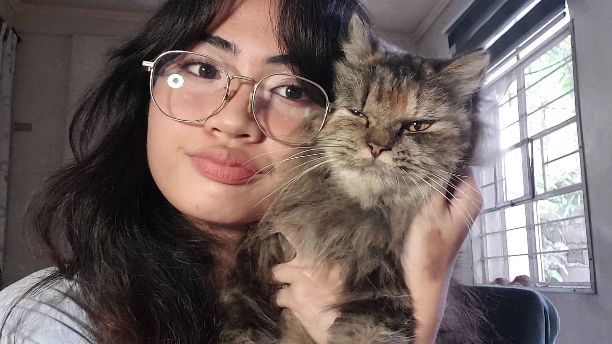
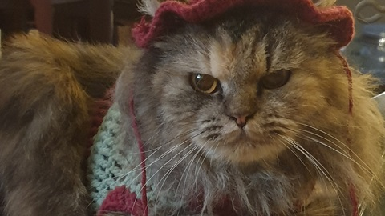
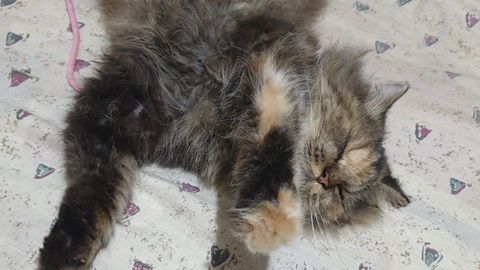
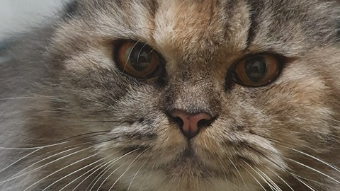
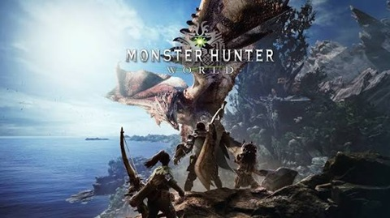
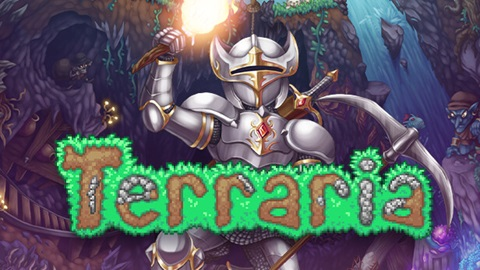
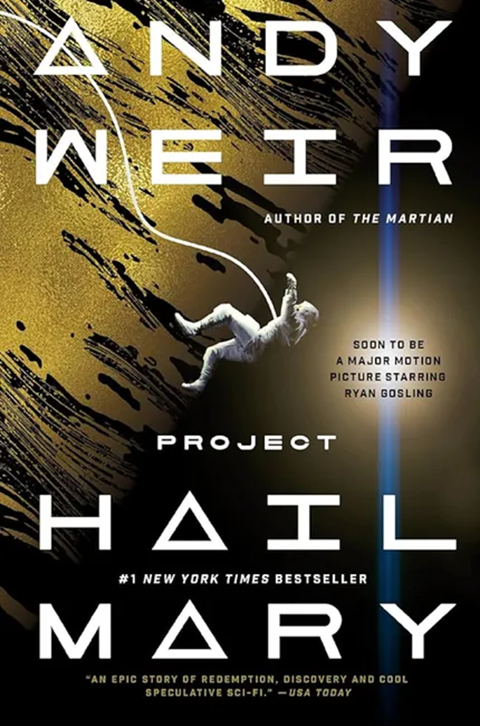
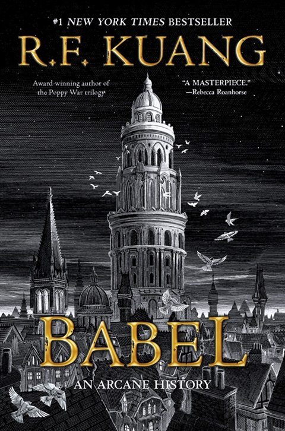
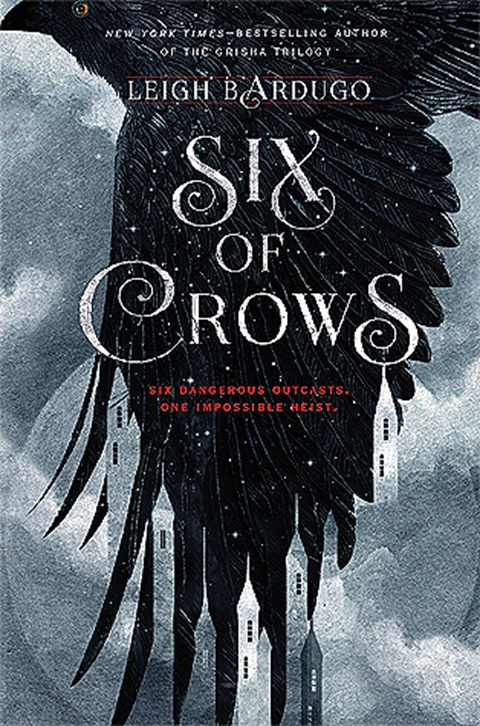

ABOUT ME
Hi! I'm Ky, I'm a full-time second-year BAMS student studying in UPOU. I'm a self proclaimed artist who loves to experiment with different art forms and mediums. I also have a deep love for RPG games like Monster Hunter and Pokemon! I'm a big fan of well written games as well as stories. With this, I am an aspiring writer who's goal is to write a story that inspires others to do the same!
THINGS I LOVE
- CATS! - I'm an animal lover but I'm slightly biased towards cats because my current child is very demanding of my attention and easily gets jealous. Her name is Evie! Named after one of my favorite songs on Polyphia's song 'Reverie'. She always looks mad but trust me, she's a sweetheart! (most of the time)
-



- VIDEO GAMES - I LOVE video games, specifically RPG games! I'm a big Monster Hunter and Pokemon fan! I also love dungeon crawlers like Cult of the Lamb and survival games like Terraria. Here's a list of my current favorite games!
-


- BOOKS - I also love to do a bit of reading during my free time! My favorite genres to read are Fantasy and Dark Academia, but recently, I've been really into Sci-Fi! Here's my top three book recommendations based on what my favorites are at the moment!
-



PASSION PROJECTS
Flow: A Red Blood Cell's Adventure
'Flow' is a collaborative passion project with my friend that we made for our highschool Biology class. It features the journey of a red blood cell as it navigates through the human body.
Date: April 2025
Cadmium Blue
'Cadmium Blue' is a personal project of mine that I wish to turn into a comic one day. In this story I aim to highlight and convey the feeing of grief that comes with losing someone you love.
Date: TBA
Website Portfolio
My goal is to create my own interactive website that features all the artwork and designs I've made all throughout my creative journey.
Date: TBA